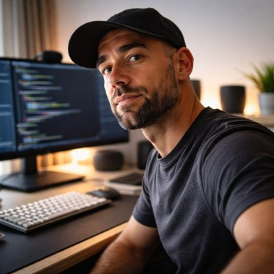

Alexis Santos
Agentic Senior Engineer
Agentic senior engineer based in Tenerife, Spain. Previously Staff iOS Engineer and Engineering Manager at Bumble. Building tools that stay out of the way.
Work with me
Interview prep, career advice, and mentorship for engineers.